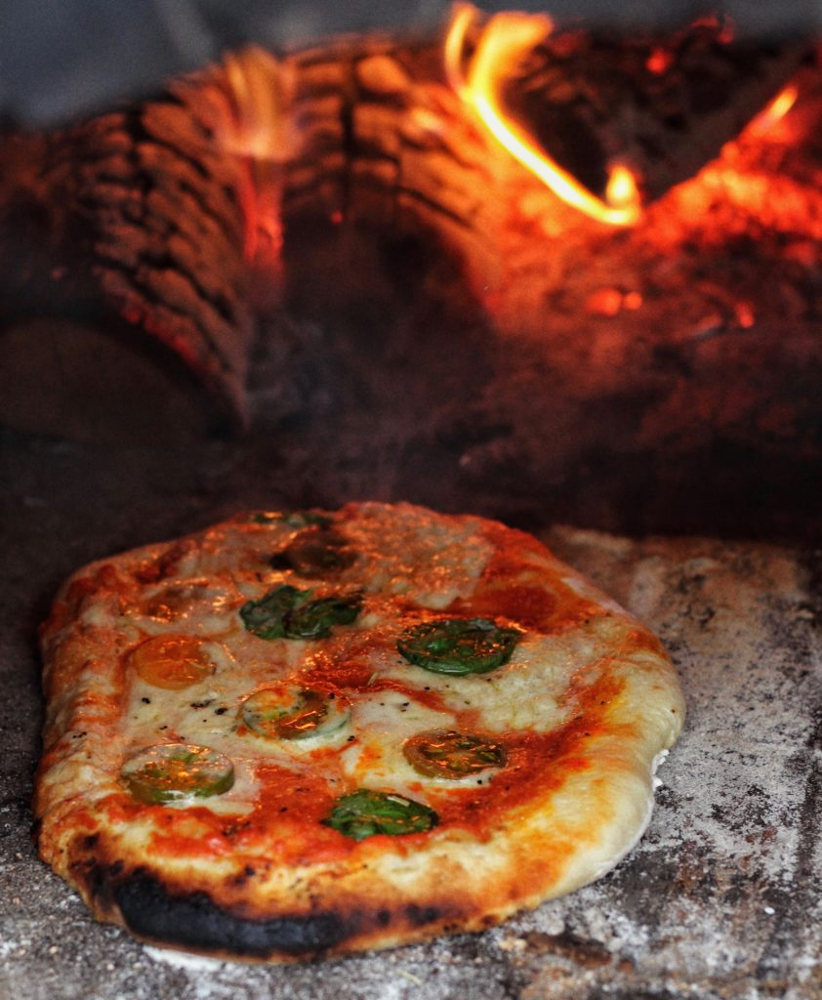

Ingredients
- Ingredients
- 2 tsp (10 mL) vegetable oil
- 2 shallots, finely chopped
- 6 cloves garlic, minced
- 1 red hot chili, finely minced
- 2 vegetable bouillon cubes*
- 2 cups (480 mL) water*
- 1⅔ cups (399 mL) canned full-fat coconut milk
- 2 cups (140 g) button mushrooms, thinly sliced
- 2 cups (172 g) oyster mushrooms, thinly sliced
- 14.1 oz (400 g) dry fusilli pasta
- ¼ cup (38 g) sun-dried tomato in oil, drained, chopped
- 2 Tbsp (19 g) nutritional yeast
- 1 Tbsp (15 mL) sodium-reduced soy sauce
- 1 tsp (2 g) paprika powder
- 1 pinch ground black pepper, plus more to taste
- 1 pinch salt, plus more to taste
- 4 cups (120 g) fresh spinach
- chili flakes
- fresh basil
- lemon slices
Optional garnish
Description
This mushroom pasta is a new all-time favourite! It's creamy, intensely flavourful, and perfect for days when you might need a big bowl of comfort. Luckily, it's also incredibly quick and easy to make, with all the ingredients simply tossed into one large pot and cooked until al dente!